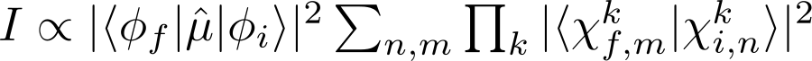
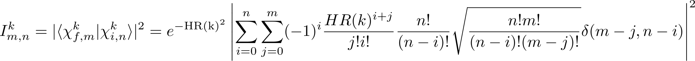
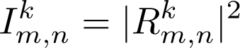
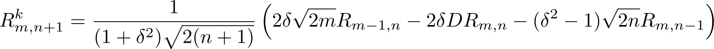
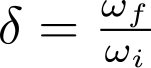
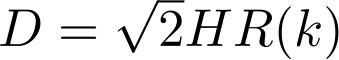
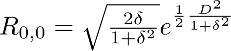
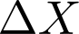
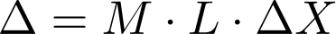
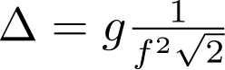

Visper works always in the harmonic approximation and does not account for the Jahn-Teller effect.
If this is not valid of effects due to non-linearities should be described, this program can not be used for it.
However, there are different levels of approximation available, requireing different amounts of input-data.
These models are specified in Visper by the names:
HR: Huang-Rhys. In this model, the HR-factors
and corresponding frequencies need to be given and Visper computes the FC-progression for this.
FC: (normal) Franck-Condon. It uses Franck-Condon progressions based on the shift of normal modes
to calculate the spectrum.
CFC: Changed Franck-Condon. In addition to the shift of the modes, the change of frequencies is
taken into account for the calculation of intensities here.
DR: Duschinsky-Rotation. In addition to CFC, here the coupling of modes in terms of rotations
is also taken into account.
URDR: unrestricted Duschinsky-Rotation. This method is the more consistent version of DR since it
does not make any approximation to the changing modes
The models and their differences are explained below in more detail.
It is important to note, however, that all calculations except the URDR-spectrum are performed in one-particle approximation (OPA).
Contents
Introduction: Vibronic spectroscopy
The starting point here is Fermi's Golden Rule. In Born-Oppenheimer approximation and neglecting Jahn-Teller contributions, it takes the form

with the first term being the electronic transition dipole moment (which is not taken into account here).
The overlap integrals in the sum thereafter are the overlap of nuclear wave functions, hence the vibronic progression where k denotes
the vibrational modes and n,m specify the degree of excitation in initial and final state respectively.
The nuclear wave functions are approximated as harmonic oscillators here.
This is valid as long as the modes m and n are not too large.
FC-progression (model FC)
In the simplest picture one assumes that the normal modes coincide in both electronic states.
This means that the curvature of the harmonic oscillator (hence the frequency) is the same
and there is just a shift of the equilibrium position.
This yields a transition probability from initial state i to final state f of

where HR(k) is the Huang-Rhys factor specifying the shift of normal modes.
The above formula yields the famous Poisson profile.
FC-progression advanced (model CFC)
In real applications, the frequencies of initial and final state in general do not coincide and hence the wave function of vibronic states
changes its spacial extend, leading to a different overlap integral.
Usually, electronically excited states are loser bound and hence the curvature becomes less steep.
If one accounts for the smoother wave function in the overlap integral,
the transition probability can be no more written in a closed form but is described by

where

with

being the ratio of final state frequency and initial states frequency of the particular mode and

the scaled HR-factor.
Finally, for correct normalisation, the purely electronic transition is
.
Duschinsky rotation (model URDR)
The Franck-Condon model has one further effect that is not taken into account in any of the above models: If considering two modes,
the potential energy surface is a two-dimensional hyperbolic function that has different stiffness in the two directions.
Now it may happen that in the final state the normal modes are linear combinations of those in inital state and by this the hyperbel will
be rotated with respect to the ground state (see adjacent graph).
In the graph on the right hand side, the initial state is shown in blue.
Since the final state (red) is rotated, both vibronic states couple with each other or, in other words, there is no full correspondence
between the vibrational states in initial and final electronic state.
This means first, that the one-particle picture is not applicable here and further, the product structure exploited above can not be conserved
in this model, making the calculations much more demanding.
For this case we can write a recursive formula similar to the CFC-case.
However, it has a complex shape and a larger number of quantities need to be defined.
The interested reader may have a look at P.T. Ruhoff and M.A. Ratner, "Algorithms for Computing Franck-Condon Overlap integrals" Intern. J. Quant. Chem. 77, 383-390 (2000)
where these equations are explained in more detail.
FC-based models
Within Visper, the HR-factors are computed as
where
is the shift of normal modes.
This can be computed in two ways: Either from the shift of Cartesian coordinates

using the formula
.
Alternatively, it can be calculated from the gradient g as

where the gradient is evaluated at the initial states equilibrium geometry.
If both electronic states are given in their equilibrium geometry, the Cartesian shift can be easily
computed and transformed to the shift of normal modes via
.
On the other hand, the shift can be infered if both states are given in the initial states
equilibrium geometry given the gradient of the final state and its frequency.
Visper by default uses the shift to determine HR-factors. If the shift is too small or the keyword
gradient is given in the list of options, it will seek informations on the gradient.
FC
Calculations with this model compute the vibronic transitions as described above.
In addition to the Poisson distribution known for FC-progressions, also transitions from vibrationally
excited initial levels are computed, changing the behaviour a bit.
CFC
This method works similar to that shown above but takes explicitly into account
that the frequencies of electronic states don't coincide and hence the overlap is different.
advantages of this method
more exact results since additional effects are taken into account
structure of the spectrum can change due to lifted degeneracies
disadvantages of this method
For larger molecules this method can take longer because the HR-factors are calculated iteratively
for many (large) systems the frequencies are expected to be very close to each other
Models in the Duschinsky picture
Taking Duschinsky-rotation into account leads to some problems by applying further
approximations such as the one-particle approximation (OPA); but the full calculation is
not feasible (or at least not wanted) for some molecules.
It turned out that the main problem is that one can not simply assign the vibrational modes
to each other since the modes in excited state are different from those in ground state
Therefore Visper has four models with differently strong approximations:
Simple
In this simple model, one simply neglects that the modes do not coincide, but also that
the order of modes may have changed and applies OPA to it.
This can lead to unreasonable results and hence this method should never be used.
URDR
Here no one-particle approximation is applied. Instead the number of normal modes taken into
account is truncated as it is done in the Franck-Condon scheme.
As in the Franck-Condon scheme, the modes taken into account explicitly are chosen by the size
of the respective shift. But for these modes, the sub-system is
calculated in full scheme.
Data-manipulations
Some of the data given (ether calculated or given via the input-files) need some manipulation to get best results. These include:
Shifting and rotating the coordinates into the same frame
projecting out rotations and vibrations
assign the modes in the respective states physically.
Particle-approximations (Franck-Condon scheme)
In the Franck-Condon picture, the intensity is determined by the Franck-Condon
factor which is, besides some factors,
.
Hence the spectrum can be calculated easily from a one-particle spectrum, if one
knows all the intensity, frequency and changing mode for all transitions in one-particle approximation.
The full FC-spectrum can be calculated exactly, if the option to nPA: m
is set with m is not lower than 3*N-6 and the threshold for the HR-factors is set to 0.
![\[ R^k_{m+1,n}=\frac{1}{(1+\delta^2)\sqrt{2(m+1)}}\left( 2\delta\sqrt{2n} R_{m,n-1}+2\delta D R_{m,n}+(\delta^2-1)\sqrt{2m}R_{m-1,n}\right) \]](CFC_relation2.png)
 In the graph on the right hand side, the initial state is shown in blue.
Since the final state (red) is rotated, both vibronic states couple with each other or, in other words, there is no full correspondence
between the vibrational states in initial and final electronic state.
This means first, that the one-particle picture is not applicable here and further, the product structure exploited above can not be conserved
in this model, making the calculations much more demanding.
In the graph on the right hand side, the initial state is shown in blue.
Since the final state (red) is rotated, both vibronic states couple with each other or, in other words, there is no full correspondence
between the vibrational states in initial and final electronic state.
This means first, that the one-particle picture is not applicable here and further, the product structure exploited above can not be conserved
in this model, making the calculations much more demanding.